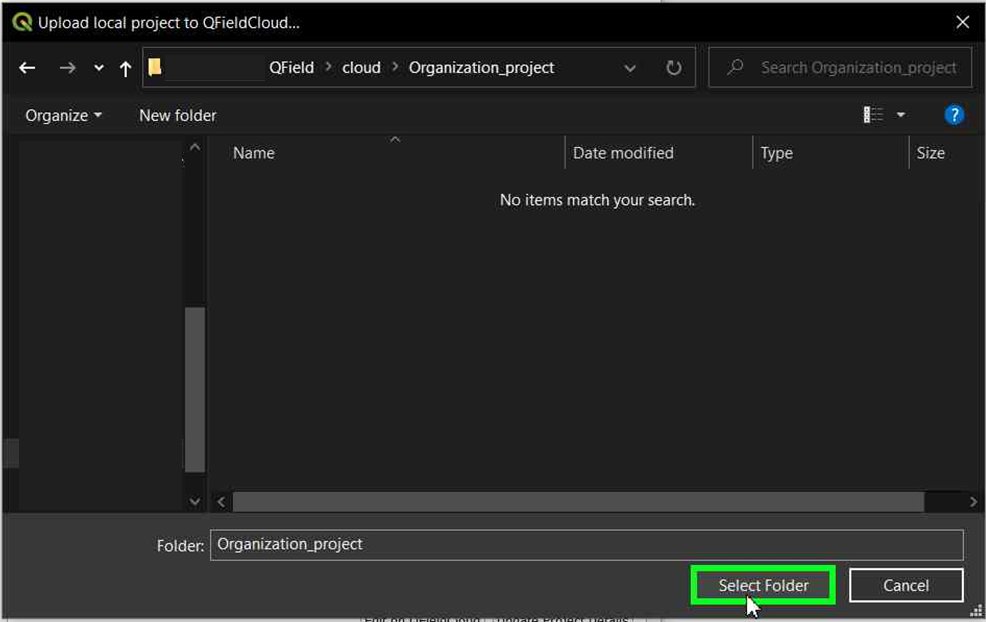

入门指南¶
帮助
我们有个 社区讨论平台 来对您的问题、疑惑和观念进行讨论。不要犹豫，去浏览吧。
获取QFieldCloud帐户¶
桌面端筹备工作
转到 注册页面 ，输入您的详细信息并创建新的QField云帐户。

编辑资料¶
更改您的个人设置。添加个人资料图片或获取有关您在团队中的所有权和成员资格的概况。
账单¶
使用QField云专业版计划或组织计划需要向帐户添加账单信息。
对于 专业版计划, 请按照以下步骤操作 :
- 点击页面右侧的用户名
- 点击 "升级到专业版"
- 在 "订购" 部分，点击 "升级"
- 在专业版部分，点击 "激活"
- 请仔细阅读 "服务条款" 并同意服务条款，然后 "继续"
- 在 "账单地址" 部分，填写表单，然后单击 "继续付款"
对于 组织计划, 请按照以下步骤操作 :
- 点击页面右侧的用户名
- 点击 "创建组织"
- 点击 "创建"
- 请为您的组织选择一个仅包含150或更少字符、字母、数字和 @/./+/-/_ 的名称
- 点击 "创建"
- 选择所需的存储量
- 请仔细阅读 "服务条款" 并同意服务条款，然后 "继续"
- 在 "账单地址" 部分，填写表单，然后单击 "继续付款"
如果账单信息不完整，可以随时转到 账单 > 订购 > 完成付款 完善表单填写
所有定价信息均可在 定价页面 找到。
QFieldCloud停止服务¶
-
如果您需要取消QFieldCloud的订阅： 1.1. 对于 Pro 套餐帐户，请单击您的用户名，选择 "设置"。 1.2. 对于 组织 套餐帐户，请单击您的组织名称，单击 "编辑组织"。请注意，您必须是该组织的所有者。
-
展开 "计费" 部分，点击 "更改"。

-
选择 "取消订阅"。

-
在随后的弹出窗口中确认取消。

-
然后将出现一条 Nyuki 消息，指示订阅将在当前计费周期后结束。

组织¶
此处展现您的团队。了解有关团队、成员及其在 QField生态环境理念 中角色的更多信息。
工程¶
搜索并从列表中选择工程，或开始创建新工程。

在QGIS桌面端连接到QFieldCloud¶
桌面端筹备工作
为了连接到QFieldCloud，您需要QGIS中的插件 “QFieldSync” 。接下来的步骤将向您展示如何安装和同步与QFieldCloud之间的数据。
安装QFieldSync¶
转到 插件 -> 管理并安装插件... 菜单，打开QGIS插件管理器。
在插件列表中查找QFieldSync，然后单击 安装插件 按钮安装最新版。
笔记
由于QFieldCloud仍处于测试阶段，因此频繁更新和修复，请经常升级QFieldSync插件。如果出现问题，请在报告之前尝试升级到最新版本。

成功安装后，将显示一个新工具栏：

登录QFieldCloud¶
单击QFieldSync工具栏中的云图标  ，将弹出登录窗口：
，将弹出登录窗口：

请输入您之前在帐户注册期间创建的网络凭证。
笔记
如果是第一次在QGIS中使用密码登录，将要求您设置主密码，便于管理QGIS中所使用的全部其他密码。有关主密码的更多信息，请访问: QGIS文档
探索工程概况窗口：当前用户名使用下划线和蓝色文本突出显示，注销按钮位于右上角 (用户图标)，左下角有个用于创建新工程的云按钮，右侧还有个用于获取最新工程列表的刷新按钮。新注册的用户将看到一张空表，一旦他们创建了新工程，列表就会扩展增加新条目。工程概况窗口如下所示：

图标指示不同工程的云和本地状态。
本地状态：
 表示仅存储在远程的云工程。
表示仅存储在远程的云工程。
 表示云工程也存储在本地。
表示云工程也存储在本地。
云状态：
红色：失败状态 —> 工程无效，云端无法解析工程。需要用户修复/上传他们的 .qgs/.qgz 工程文件。 棕色：忙碌状态 —> 我们正在处理您的工程，请耐心等待。在此期间，您不能对此工程做更多的事情。 绿色：正常状态 —> 工程已被云端成功解析。您可以尝试在QField下载，但不能保证成功。
每个工程的状态都显示一个小提示。
双击列表中的工程，可以查看和编辑具体的工程属性。

在 QField 和 QField Sync 更改默认的 QFieldCloud 服务器¶
默认情况下，QField 和 QFieldSync 连接到 app.qfield.cloud 上的 QFieldCloud 服务。
您可以修改默认的 QFieldCloud 服务器、QField 和 QFieldSync 连接到：
- 在 QField 或 QFieldSync 中打开登录界面。
- 双击 Nyuki 图标 (蓝色蜜蜂 QFieldCloud 徽标)。
- 此动作将显示一个字段，您可以在其中输入首选 QFieldCloud 服务器地址。
- 在提供的字段中输入所需服务器的详细信息。 (字段留空将连接到 app.qfield.cloud 的默认QFieldCloud服务器)


笔记
需要注意的是，QFieldSync在多个QGIS配置文件中不支持相同的云工程。建议您为QFieldCloud工程使用单一QGIS配置文件，进而避免同步问题。
创建和配置云工程¶
通过单击左下方的云按钮创建新工程。首先，您需要选择如何介于如下几点创建新工程：
- "将当前打开的工程转换为云工程" 从当前打开的QGIS工程创建新的QFieldCloud兼容工程。为此，数据集将被复制到一个输出目录中，该目录充当本地镜像。矢量数据集将转换为地理包格式，方便从多个设备进行数据同步，而其他数据集类型将复制到新建工程位置。
要转换当前工程，必须使用完全空的目录。
- "创建新的空QFieldCloud工程" 创建新的空QFieldCloud工程。您将负责在选中的本地目录中移动所有与工程相关的文件，工程文件位于其根目录。只有当您单击同步按钮时，才会上传工程文件。请确保选中的目录包含且不超过一个QGIS工程文件。

表单将询问您工程名称、描述和本地目录。在本地目录中，根据操作您可以获取不同的提示：
- 输入的路径尚未包含QGIS工程文件。
- 输入的路径包含一个QGIS工程文件。
- 请选择要存储工程的本地目录。
- 输入的路径是相对路径，请输入绝对目录路径。
- 输入的路径不是目录，请输入有效的目录路径。
- 输入的路径不是现有目录，将在您提交此表单后创建。
- 在目录中发现多个工程文件，请在根目录中只保留一个QGIS工程。
在组织中创建工程¶
如何在组织中创建工程：
选项 1: 直接将您的本地工程转换为组织的QFieldCloud工程:
-
Follow the steps configure your cloud project, until you get the "Project details".
-
将工程的所有者更改为您的组织。

-
单击 "创建" 开始转换和同步。完成后，可以在QFieldCloud中看到该工程在您的组织中。

笔记
此功能需要 QField Sync 4.6 或更高版本
选项 2: 直接上传到组织:
-
选择您的组织。

-
进入组织后，单击 "创建工程" 。

-
选择 "创建新的空工程" 。

-
您可以在概览中看到新工程。

-
在QGIS中的QFieldSync，您将看到列出的新工程，单击 "编辑选中的云工程" 。

-
选择要保存工程的文件夹。

-
在所选文件夹，可以粘贴已处理或保存新的工程。

-
一旦文件夹包含工程，就可以对其进行同步。

-
最后，将更改推送到云端。

-
您可以验证这些文件是否存在于组织工程中。

选项 3: 将工程从您自己的帐户转移到组织:
-
如果在QFieldCloud中已经有工程 (请参阅 配置您的云工程) 。在工程中，单击 "设置" 并选择 "转移此工程的所有权" ，选择所需的组织进行转让。

-
将出现弹出窗口以确认是否转让。如要继续，需要键入 "Here be dragons" 并单击 "转移工程" 。

为QField配置工程图层¶
单击QFieldSync工具栏中的第五个图标  ，可以对工程图层进行配置。在此，您可以配置QFieldCloud图层动作。多数情况，您需要配置联机或脱机图层的首选项。对于更深入的控制，可以在高级设置中逐图层进行配置。请在 QFieldSync基础入门 中获取有关如何配置图层的更多信息。
，可以对工程图层进行配置。在此，您可以配置QFieldCloud图层动作。多数情况，您需要配置联机或脱机图层的首选项。对于更深入的控制，可以在高级设置中逐图层进行配置。请在 QFieldSync基础入门 中获取有关如何配置图层的更多信息。
建议使用地理包图层进行协同编辑。有关矢量格式支持的详细信息，请参阅 高级设置指南 。
笔记
如果使用没有主键字段的实验数据源 (例如Shapefiles、GeoJSON等)，则必须有一个小写字母 fid 的字段，该字段将用作唯一标识每个要素的主键。
任何QField支持的栅格和矢量图层格式都可以用作只读数据。

Enabling Automatic Pushing of Changes to QFieldCloud¶
With this functionality, users and managers of QFieldCloud projects can enforce automatic pushing of pending changes to QField devices in the field, as well as specify the interval in between automated pushes. The functionality is activated through a project setting, allowing remote activation.
-
Access Project Settings: Navigate to the QField panel in the Project Settings dialog provided by the QFieldSync plugin.
-
Enable Auto-Push: Toggle the "Automatically push pending changes on the following interval" option and establish your preferred interval.
{kind=link}

Note
Benefits:¶
- Real-Time Updates: Ensures prompt synchronization of field data with the QFieldCloud project.
- Streamlined Workflow: Minimizes manual intervention and ensures surveyors do not need to worry about synchronization, helping them focus on data quality.
Considerations:¶
- Network Stability: Ensure stable internet connectivity for auto-push functionality.
- Battery Optimization: Implement strategies to mitigate battery consumption on QField devices during prolonged fieldwork.
上传工程¶
配置完成后，可以按下云按钮打开同步对话框。在这里，您必须做出决定：本地文件还是云端文件。

现在应该可以在 QFieldCloud 端看到您的工程和文件
激活QFieldCloud更新通知¶
- 访问您帐户的设置。
-
导航到通知部分。在此，可以自定义您希望在帐户中注册的电子邮件地址收到的通知频率。

您收到的通知包括: - 已创建的用户 - 已创建的组织 - 已删除的组织 - 已创建的组织成员 - 已删除的组织成员 - 已创建的团队 - 已删除的团队 - 已创建的团队成员 - 已删除的团队成员 - 已创建的工程 - 已删除的工程 - 已创建的工程成员 - 已删除的工程成员
将收到有关您不是参与者的事件的通知。这些通知专门针对组织的其他成员或工程合作者发起的事件。
Enhance your project with the "Optimized Packager"¶
We recommend to use the new "Optimized Packager" over the deprecated "QGIS Core Offline Editing" for all your projects. Set the packager under "Packaging Offliner" in the "Settings" tab of your project.
The "Optimized Packager" supports consolidating filtered layers of same datasource into a single offline layer, respecting distinct symbology but also using less storage. Here is an example to illustrate this feature:
Example Configuration:¶
- Layer 1.1:
- Data Source:
layers.gpkg - Table:
layer1 -
Filter:
id % 2 = 1 -
Layer 1.2:
- Data Source:
layers.gpkg - Table:
layer1 - Filter:
id % 2 = 0
Result:¶
For the new offliner:
- A single layer is generated in the offline geopackage, combining data from layer1 with the specified filters.
For the old (QGIS) offliner:
- Two separate layers are created, each representing the filtered datasets:
- Layer 1: Filtered with id % 2 = 1
- Layer 2: Filtered with id % 2 = 0

Note
This configuration must be set in the Settings page of each project in QFieldCloud.
外业设备¶
QField界面
安装QField¶
从 谷歌商店 下载并安装QField的最新版本。滚动到底部并启用Beta测试，请勿在工作中使用此版本！
笔记
由于 QField 2.0 仍处于测试阶段，因此至少每周都有定期更新和修复。请每周至少升级一次测试版QField。如果出现问题，请在报告前尝试安装最新版本。
开始处理您的工程¶

使用您的用户名和密码登录

选择要下载到设备上的工程：

同步更改¶
Make a change to your data. Either create a new feature, delete a feature, or modify the geometry or attributes. Open the blue cloud button on the top left of the screen:

Choose an action with the change you made to your data. Each of the actions have an explanation what you should expect to happen:

您的更改现在可供在云端访问您工程的所有人员使用。
您可以在 高级设置向导 和 QFieldCloud技术参考 发现更多信息。